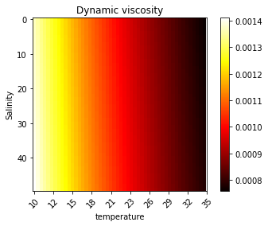

dynamic_viscosity(38e-3, np.linspace(10, 35, 5))array([0.00140539, 0.00118849, 0.00102094, 0.0008885 , 0.0007818 ])The dynamic viscosity of seawater can be found using the equations of Sharkawy et al 2010. This equation is used in the TEOS-10 standard and is implemented here.
\[\mu_{SW} = \mu_W (1 + AS +BS^2)\]
\[\mu_W = 4.2844e^{-5} + \frac{1}{0.157(T + 64.993)^2 - 91.296} \]
\[A = 1.541 + 1.998e^{-2} T - 9.52e^{-5}T^2 \] \[B = 7.974 - 7.561e^{-2}T + 4.724e^{-4}T^2 \]
For the above equations, \(T\) is temperature in degrees Celsius, and \(S\) is the salinity in \(\frac{g}{kg}\). The Sharkawy correlation is valid for the following conditions
This method has an average accuracy of $$4%. For alternative methods on calcualting the dynamic viscosity of seawater see Qasem et al 2021.
dynamic_viscosity (salinity:float, temperature:float)
Calculate the dynamic viscosity dependent on temperature and salinity
| Type | Details | |
|---|---|---|
| salinity | float | A positive value of the water salinity [g/kg] |
| temperature | float | The temperature in celsius [C] |
| Returns | float | returns values in [kg/ms] |
Applying the function to a range of temperatures shows that the viscosity is quite temperature dependent
array([0.00140539, 0.00118849, 0.00102094, 0.0008885 , 0.0007818 ])Looking at a range of both temperature and salinity combinations, the viscosity appears to be more dependent on temperature than salinity in the range of possible values we find in the sea
array([25., 26., 27., 28., 29., 30., 31., 32., 33., 34., 35., 36., 37.,
38., 39., 40.])counts = 50
comb_array = np.array(np.meshgrid(np.linspace(25, 40, counts )*10**(-3), np.linspace(10, 35, counts))).T.reshape(-1, 2)
comb_array
res = dynamic_viscosity(comb_array[:,0], comb_array[:,1]).reshape(counts,counts)
plt.imshow(res, cmap = 'hot')
plt.colorbar()
plt.title("Dynamic viscosity")
plt.ylabel('Salinity')
plt.xticks(np.linspace(0, 50, 10 ) ,np.linspace(25, 40, 10).astype(int), rotation= 45)
plt.xticks(np.linspace(0, 50, 10 ) ,np.linspace(10, 35, 10).astype(int), rotation= 45)
plt.xlabel('temperature')Text(0.5, 0, 'temperature')
\[v = \frac{\mu_{SW}}{\rho},\] where \(\mu_{SW}\) is the dynamic viscosity the seawater, and \(\rho\) is the density of the water
kinematic_visocity_fn (dynamic_viscosity:float=0.00118, water_density:float=1026)
A simple wrapper calculating the ratio of dynamic viscosity and water density
| Type | Default | Details | |
|---|---|---|---|
| dynamic_viscosity | float | 0.00118 | This value is typically 1.18e-3 [kg/(ms)] |
| water_density | float | 1026 | The density of water under current conditions [kg/m^3] |
| Returns | float | [m^2/s] |
The kinematic viscosity can be calculated without entering any parameters, this uses the default values only
However if the water conditions are not those of the default these alternative values can be entered as required
The reynolds number is a common formalua used throughout physiscs and engineering desciplines. Low reynolds numbers typically indicate laminar flow whilst high reynolds numbers typically indicate turbulent flow. However, in the case of ships the Reynolds number will always be large, however it is still a valuable component of many other calculations used by marine architects.
\[\text{Re} = \frac{V_s L_{os}}{v}, \] where \(V_s\) is the speed through wataer, \(L_{os}\) is the length overall submerged of the ship, and \(v\) is the kinematic viscosity.
reynolds_number_fn (stw:float, length:float, kinematic_viscosity:float)
The Reynolds number is a element of fluid dynamics and is often used to predict whether flow is laminar or turbulent
| Type | Details | |
|---|---|---|
| stw | float | Speed through water [m/s] |
| length | float | Length of the vessel, \(L_{os}\) Length overall submerged is typically used [m] |
| kinematic_viscosity | float | [m^2/s] |
| Returns | float | Reynolds number is dimensionless |
As can be seen due to the small values of kinematic viscosity even a small ship going relatively slowly (approx 10kn) has a large reynolds number
The ratio of flow inertia to an external field. The Froude number is often used in estimating the resistance of a partially submerged object in water
\[\text{Fr} = \frac{V_s}{\sqrt(g L_{WL})}, \] where \(V_S\) is the speed through water, \(L_{WL}\) is the length at waterline, and \(g\) is acceleration due to gravity.
froude_number_fn (stw:float, length:float, gravity:float=9.81)
The Froude number is useful for calculating the water resistance
| Type | Default | Details | |
|---|---|---|---|
| stw | float | speed through water [m/s] | |
| length | float | Length of vessel, typically \(L_{wl}\) Length of waterline [m] | |
| gravity | float | 9.81 | acceleration due to gravity [m/s^2] |
| Returns | float | The Froude number is a dimensionless value |
As the Froude number is inversevly proportional to the size of the vessel, froude numbers tend to be small for ships which also tend to go at slower speeds. Relative to the Reynolds number the Froude number is always much smaller.
The resistance coefficient related to the resistance of the water flowing over the hull
CF_fn (reynolds_number:float, adjustment_value:float=0.1194)
An essential part of calculating the resistance experienced by the ship
| Type | Default | Details | |
|---|---|---|---|
| reynolds_number | float | indicating the type of flow of the water | |
| adjustment_value | float | 0.1194 | An adjustment value applied by testing company. Default if from ITTC 57 |
| Returns | float | This is a dimensionaless value |
The 19\(^{th}\) ITTC proposed a formula that corrects for the roughness of the vessel hull.
\[\Delta C_F = \frac{11}{250} \left( \left(\frac{k_s}{L_{WL}}\right)^{\frac{1}{3}} -10 \cdot \text{Re}^{-\frac{1}{3}} + \frac{1}{8000} \right), \] wehere \(k_s\) is the surface roughness, \(L_{WL}\) is the length of vessel at waterline, and \(Re\) is the Reynolds number for current conditions.
This value is used in several other adjustments and calculations. Function for obtaining it is found here.
roughness_allowence_fn (length:float, reynolds_number:float, surface_roughness:float=0.00015)
| Type | Default | Details | |
|---|---|---|---|
| length | float | Length of the vessel at waterline [m] | |
| reynolds_number | float | dimensionless value describing flow properties | |
| surface_roughness | float | 0.00015 | The default value is outdated an modern hull covering are likely considerably less rough [m] |
| Returns | float |